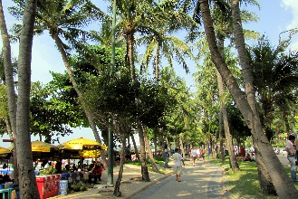
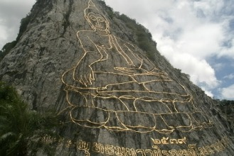
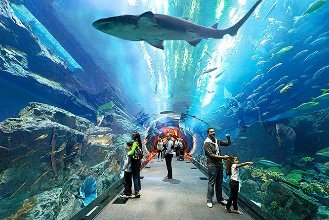
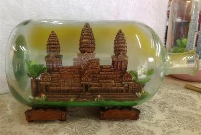
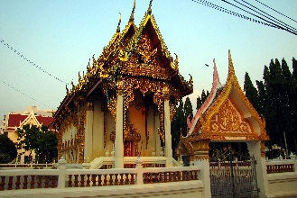

Pattaya (พัทยา)
Principal cidade da província de Chonburi, localizada na costa leste do Golfo da Tailândia, há cerca de 145km de Bangcoc.A Pattaya Beach (หาดพัทยา) tem forma de "meia-lua" e 2,7km de extensão.
A praia em si não tem nem de perto a beleza de outras praias tailandesas, nem a areia branca de algumas delas (aqui ela é mais amarelada).
Por estar infestada de lanchas e jet skis, suas águas são mais sujas, mas seu pôr do sol é irresistível, especialmente visto do mirante sobre o morro do Wat Khao Phra Bat.
O nome da cidade surgiu da marcha de Phraya Tak e seu exército de Ayutthaya até Chanthaburi, antes da queda da antiga capital frente aos invasores birmaneses em 1767.
Por séculos Pattaya foi apenas uma pequena vila pesqueira, mas a mudança começou em 26/04/1961, quando o primeiro grupo com aproximadamente 100 americanos que lutavam na Guerra do Vietnã chegou na cidade para descansar. A partir de então, a cidade foi se tornando uma praia cada vez mais popular (atualmente atrai mais de 5 milhões de turistas por ano). Com isso, casas de pescadores ao longo da praia foram substituídas por resorts, hotéis, shopping centers, boates; barcos pesqueiros foram adaptados para se tornarem barcos turísticos e a antiga tranquilidade da praia deu lugar à estridente vida noturna.
Oficialmente a cidade tem aproximadamente 110 mil habitantes, mas assim como em Bangcoc, esse total exclui um grande número de pessoas que trabalham na cidade mas permanecem registradas em suas cidades de origem, além de muitos residentes estrangeiros. Estimativas mais realistas, que incluem esses moradores não registrados, ficam em torno dos 200 mil habitantes.
Muitos dos grandes hotéis operam também restaurantes, salas de coquetéis, danceterias, clubes noturnos e "super clubes", que oferecem bebidas, música e entretenimento internacional.
A vida noturna além desses hotéis é bem mais "liberal". A maioria dos go-go bars está localizada em South Pattaya, principalmente na Walking Street, o local mais famoso da cidade.
Danceterias, casas noturnas com prostitutas, dançarinas, strippers e ladyboys, coffee shops, karaokes, bares a céu aberto e restaurantes com música ao vivo e lutas de Muay Thai ou transmissão de jogos de futebol competem entre si para chamar a atenção dos turistas.
Alguns aconselham os turistas a evitarem a praia durante a noite. Embora a Beach Road (rua de frente ao mar) seja bem iluminada e movimentada, alguns marginais agem contra turistas que se "aventuram" nas áreas não iluminadas da faixa de areia. Após alguns relatos de ataques à tuistas, a polícia começou a monitorar a área com várias batidas.
Nas vezes em que estive em Pattaya, sempre andei tranquilamente pela Beach Road a noite, com câmera no pescoço, e nunca tive problemas. Mas é melhor prevenir e não ignorar os relatos de roubos no local. Manter atenção e desconfiar de movimentações suspeitas é recomendável em qualquer parte do mundo.
Importante! Pattaya tem má fama na Tailândia, uma vez que é um dos maiores centros de prostituição do mundo. Mas esse problema realmente existe na cidade?
Sim, existe. E é bastante visível, mas é mais concentrado na Walking Street, na Beach Road e nas ruas laterais destas.
Também é importante! => Não cometa o erro de muitos turistas que acham que a cidade se resume à isso, ou que todos os que a visitam vão atrás de prostituição.
Pattaya, por ser a praia mais próxima de Bangcoc atrai muitos turistas que não têm tempo ou dinheiro para irem para praias ou ilhas mais badaladas, mas que não abrem mão de uns dias no litoral.
Além disso, a cidade tem várias atrações familiares bem legais para os visitantes, como o Wat Khao Phra Bat e suas belas vistas do alto do morro, o Mini Siam e suas miniaturas de locais famosos da Tailândia e do resto do mundo, o belíssimo e impressionante Santuário da Verdade, o florido Jardim Botânico Tropical de Nong Nooch, o interessante e divertido museu Art in Paradise, a ilha de Koh Larn, o Museu de Cera Louis Tussaud, o Museu do Acredite se Quiser, dentre outras atrações.
Pattaya pode ser o céu ou o inferno dependendo do seu ponto de vista, mas uma coisa é certa: vale muito a pena visitá-la! Você apenas precisa ir pelos motivos certos.
Como chegar à Pattaya
De carro: pode ser alcançada em uma viagem de mais ou menos 2 horas pela Highway 7 (Bangkok => Chon Buri => Pattaya). A rodovia liga-se com a Highway 9 e há também outra entrada em Si Nakharin e na Rama IX Junction. Outra maneira é através da Highway 34 (Bang Na => Trat). Em Bang Na, Bang Phli, atravesse o rio Bang Pakong até Chonburi e pegue a passagem secundária para chegar à Sukhumvit Rd (Highway 3, passando a Bang Saen Beach, Bang Phra em direção à Pattaya).De ônibus: os ônibus de 1ª classe saem do Eastern Bus Terminal (Ekkamai) a cada 30 minutos, das 5:00 às 22:00, e do Northern Bus Terminal (Mochit 2 Bus Terminal) na rua Kamphaengphet, das 5:00 às 20:00. Custam cerca de ฿$ 200 e levam cerca de 2h / 2h30min até chegarem na North Pattaya Bus Station. Horários de saídas e passagens podem ser obtidos no Eastern Bus Terminal (☎: 0 2391 2504 / 0 2391 8097), ou no Northern Bus Terminal (☎: 0 2936 2852-66). No Southern Bus Terminal (Sai Tai Taling Chan, ou สายใต้ตลิ่งชัน) os ônibus são menos frequentes e levam mais tempo para chegar em Pattaya. Desde a estação rodoviária na rua North Pattaya, saem songthaews de poucos em poucos minutos (quando completarem a lotação). A passagem para qualquer lugar na Beach Road é de ฿$ 30 (aperte o botão no teto para indicar que quer descer). Existem também os microônibus que saem diariamente do Aeroporto Internacional Suvarnabhumi de Bangcoc em direção à Pattaya. Os ônibus saem diariamente das 7:00 às 22:00 na alta temporada, e com menor frequência fora da estação. A viagem leva cerca de 2 horas. Os ônibus de 2ª classe (com ar condicionado, mas geralmente sem banheiro) não usam as vias expressas, e fazem paradas frequentes (as vezes longas). A passagem custa em torno de ฿$ 150. Muitos ônibus de 2ª classe saindo de Bangcoc continuam até South Pattaya, passando pela Jomtien Beach, então vale a pena considerar essa opção caso esse seja seu destino e você não esteja com pressa. As passagens são vendidas no terminal e no próprio ônibus. Além dessas opções, alguns hotéis em Bangcoc providenciam serviços de ônibus para Pattaya.
De microônibus ou van: na Khao San Road em Bangcoc não é difícil encontrar agências que organizam vans e microônibus para Pattaya, custando em média ฿$ 150-180. Próximo à estação Victory Monument do Skytrain, você pode pegar vans para Pattaya por ฿$ 150.
De trem: a State Railway of Thailand oferece um serviço de trens para Pattaya (durante os dias de semana), saindo da Estação Hua Lamphong às 06:55. A viagem leva mais ou menos 5 horas para chegar até Pattaya. Há 2 estações na cidade, a principal é a Pattaya Railway Station, há 3km da praia, próxima ao Siam Country Club. A outra é a Pattaya Tai Railway Station, que fica 3km ao sul. A melhor opção costuma ser a estação principal. Quando o trem chega, há sempre um songthaew esperando os passageiros para levá-los à área da Beach Road, por ฿$ 30. O caminho inverso pode ser feito com um mototáxi, por cerca de ฿$ 50.
De avião: a Bangcoc Airways oferece voos diários para o U-Taphao Airport em Rayong, que fica há aproximadamente 30 km ao sul de Pattaya. Para chegar à Pattaya, você pode pegar vans de 3 companhias diferentes, com preços em torno de ฿$ 250. De Rayong para Pattaya a viagem leva uns 50 minutos.
Se locomovendo pela cidade
O Mapa Oficial de Pattaya está disponível na prefeitura, nas delegacias de polícia, na central da Tourist Police e na Polícia de Imigração.* Passagens para algum dos mais de 700 songthaews azul escuros da cidade, também conhecidos como Baht Buses, custam ฿$ 10 para percursos entre Pattaya e a Praia Jomtien. É melhor ter o valor trocado. Evite pedir um destino específico ao motorista, pois alguns cobram ฿$ 100-200 para parar onde você pediu. Se você conhece o caminho, é recomendado subir sem pedir para parar em um ponto específico. Assim você só paga ฿$ 10, não importa o quão longe for. Cuidado com songthaews vazios, especialmente os estacionados na beira da praia, pois os motoristas podem alegar que você está "contratando" o veículo como um táxi, e cobrar até ฿$ 150. Os songthaews brancos que passam pela Sukhumvit Rd vão até as cidades de Si Racha e Sattahip e custam ฿$ 20. Caso você seja cobrado extorsivamente por um motorista de songthaew, anote o número do veículo, com 3 dígitos, presente no lado superior esquerdo e também grafado em ambos os lados e na parte traseira, e reporte o problema para a prefeitura de Pattaya (☎: 038429216) ou para a Banglamung District Baht Bus Cooperative (☎: 038221271 ou 038423554).
* Uma linha local de ônibus, chamada Beach Bus, percorre uma rota circular:
Pattaya Floating Market - Chaiyapreuk - Jomtien Beach Road - Thappraya - Second Road - Dolphin Roundabout - Terminal de ônibus norte - Prefeitura - Pattaya Beach Road - Walking Street - Thappraya - Jomtien Beach Road - Chaiyapreuk - Pattaya Floating Market. A passagem custa ฿$ 30.
* A maneira mais rápida de se locomover pela cidade é através dos mototáxis (ou motosai como os tailandeses os chamam). É mais barato do que "alugar" um songthaew, mas é menos seguro. Alguns carregam 2 (ou mais) passageiros, embora seja ilegal. Estrangeiros podem esperar por corridas de ฿$ 30-40 dentro da área central.
* Embora táxis com taxímetro sejam comuns na cidade, muito poucos deles aceitam uma corrida com o taxímetro ligado, e a menos que você fale tailandês, a corrida começa em caros ฿$ 150, ou mais.
Fique seguro
Pattaya não tem boa fama entre os tailandeses, e como algumas partes da cidade estão direcionadas à prostituição, ela inevitavelmente acaba tendo problemas também com venda de drogas, e com isso usuários, boa parte deles turistas, além de outras atividades "suspeitas". Tendo isso em mente, saiba que Pattaya não é tão segura quanto outras partes da Tailândia, mas isso também não significa que ela seja perigosa.Acompanhando a mídia local, não são raros os relatos de turistas roubados, agredidos, as vezes com gravidade, mas a cidade recebe milhões de turistas, e o número de casos não chega a ser alarmante, visto que infelizmente tais crimes acontecem com uma frequência muito maior em cidades que às vezes nem têm fama de serem perigosas. Vale ressaltar também que muitas vezes as confusões são iniciadas por turistas embriagados, que "empolgados" com a liberdade de estarem longe de suas casas e com os preços de bebidas MUITO menores do que em seus países de origem, bebem em demasia e se envolvem em brigas.
Portanto, se você é um turista consciente, que desconfia de certos lugares suspeitos e não bebe a ponto de perder o controle de suas ações, você não deverá ter problemas.
Fui diversas vezes à Pattaya, e nunca me senti em perigo (exceto por cães grandes na rua).
De maneira genérica, os riscos estão divididos nas 3 categorias abaixo:
* Trânsito: para a maioria dos visitantes o aspecto mais perigoso de Pattaya é o trânsito. Os 3 locais com maior incidência de acidentes são a Dolphin Roundabout (rotatória que liga as ruas Beach Road, Second Road, North Pattaya Road e Naklua Road), a esquina das ruas Beach Road e Central Pattaya Road e a esquina da Beach Road / Walking Street com a South Pattaya Road.
A maioria dos acidentes da cidade envolve motos e são relativamente comuns tarde da noite e nas primeiras horas da manhã, quando motoristas bêbados são um problema significativo.
Cuidado com as ruas ao atravessar, mesmo se estiver em uma faixa de pedestres, que costuma não ser muito respeitada pelos motoristas locais. Cuidado também nas calçadas, pois alguns motociclistas as usam como atalho, e sempre saem impunes (isso é um costume comum na Tailândia).
Cuidado também ao entrar no mar, pois infelizmente regras de segurança são descaradamente ignoradas e jet skis e lanchas trafegam sem a menor preocupação na área dos banhistas.
* Scams: alguns dos scams para se ter cuidado são o dos aluguéis de jet skis, que estão disponíveis a partir de ฿$ 600 (30 minutos). O scam mais comum sobre eles envolve uma cobrança por danos no veículo, embora você não tenha o danificado. Eles são bem insistentes e por vezes ameaçadores em sua cobrança indevida. Caso seja necessário, ligue para a Tourist Police (1155). Mas aí fica a sua palavra contra a do locador do veículo. Se realmente quiser alugar um jet-ski, faça você mesmo uma verificação antes de pegá-lo e aponte cada arranhão, quebra ou amassado que encontrar, deixando claro que está ciente deles antes de entrar no mar. Outro scam é a troca de notas. Cuidado ao fazer compras pequenas com notas de ฿$ 1000, especialmente em bares e boates à noite. O scam mais comum é o atendente te dar um troco insuficiente, alegando que você pagou com uma nota de ฿$ 500. É a sua palavra contra a do atendente, então não há muito o que fazer, a não ser evitar pagar contas pequenas com notas grandes, ou avisar que está dando uma nota de ฿$ 1000.
* Crime: como a maior parte da Tailândia, Pattaya é segura para turistas e crimes violentos como assalto são incomuns, com exceção de roubo de joias e bolsas, geralmente com ladrões em motos, e às vezes com as vítimas em motos também. Cuidado com ladyboys se aproximando em duplas. Enquanto um te distrai, outro tenta te roubar. Na verdade o melhor é deixar seus objetos valiosos no cofre do seu quarto no hotel. Batidas de carteira podem acontecer nas áreas com mais movimentação noturna, como a Walking Street, por isso turistas devem evitar andar com passaporte, cartão de crédito ou muito dinheiro a noite. Se você tiver sua carteira roubada e suspeitar de alguém que está se afastando, não o siga. Você pode ter se confundido, e certamente o suspeito alegará isso, e possivelmente ele não estará sozinho. Se você não tiver como provar, apenas saia do local e use isso como experiência para que não aconteça de novo. Nunca puxe briga com ninguém, nem tente intervir, mesmo que verbalmente, em uma discussão envolvendo tailandeses, por mais injusta que a situação possa parecer. Lembre-se que você está longe de casa, eles estão em maior número, e você pode ter sérios problemas.
Tailandeses tem a fama (justificada) de serem desleais em brigas de rua, com brigas de 4, 5 pessoas contra 1 sendo quase que uma regra. Não importa o quão revoltado você esteja, aceite sua má sorte e sua raiva e deixe o local.
Não entre em locais de entretenimento noturno que não estejam devidamente identificados com letreiros ou placas fixas do lado de fora, ou que aparentem ser mal iluminados por dentro.
Cuidado em áreas mais remotas e mal iluminadas, especialmente se for inconsequente o bastante para andar bêbado de madrugada.
As atrações de Pattaya

Museu de Arte na Garrafa
Praia Jomtien (Hat Jomtien / หาดจอมเทียน)
Também conhecida como Pattaya Beach por ser a principal praia da cidade, tem cerca de 2,7km de extensão e fica há 4 km do centro.
Paralela à ela corre a Beach Road, onde encontram-se shoppings, hotéis, bares e restaurantes.
É também onde fica a famosa Walking Street e o pier que leva à ilha de Koh Larn.
É também onde fica a famosa Walking Street e o pier que leva à ilha de Koh Larn.

Walking Street (ถนนคนเดินพัทยา)
Essa rua é o motivo pelo qual grande parte dos turistas visita Pattaya. É nessa rua e em suas laterais que se concentram os principais clubes da cidade.
Quase tudo o que você ler, ver ou ouvir sobre Pattaya acontece nessa rua ou em suas laterais.
Há clubes para todos os gostos, desde baladas eletrônicas convencionais, clubes de strip à outros com um "serviço extra".
Mesmo que você não se interesse por esses clubes, vale a pena ao menos passar pela rua à noite, afinal, ela e seus letreiros em neon, por si só já são uma atração.
A partir das 18:00 até a madrugada, o trânsito de carros é fechado e a rua vira um calçadão.
Quase tudo o que você ler, ver ou ouvir sobre Pattaya acontece nessa rua ou em suas laterais.
Há clubes para todos os gostos, desde baladas eletrônicas convencionais, clubes de strip à outros com um "serviço extra".
Mesmo que você não se interesse por esses clubes, vale a pena ao menos passar pela rua à noite, afinal, ela e seus letreiros em neon, por si só já são uma atração.
A partir das 18:00 até a madrugada, o trânsito de carros é fechado e a rua vira um calçadão.
Local: à beira da Praia Jomtien, antes do começo da Beach Road.
Voltar à lista
Wat Khao Phra Bat (เขาพระบาท)
Templo em um dos pontos mais altos da cidade, localizado entre South Pattaya e a Praia Jomtien, na
Praia Nang Ram (หาดนางรำ).
No topo de um dos picos do morro, após uma escada decorada com najas em ambos os lados, está o Wat Khao Phra Bat e sua imagem de Buda com 18m de altura, além do monumento à Kromluang Chomphonkhetudomsak, patrono da marinha moderna tailandesa e um ponto de observação com uma bela vista panorâmica da praia e da Beach Road. Este ponto oferece vistas belíssimas no pôr do Sol.
Do outro lado do morro, em outro pico, lado fica uma grande imagem de Buda sentado.
No topo de um dos picos do morro, após uma escada decorada com najas em ambos os lados, está o Wat Khao Phra Bat e sua imagem de Buda com 18m de altura, além do monumento à Kromluang Chomphonkhetudomsak, patrono da marinha moderna tailandesa e um ponto de observação com uma bela vista panorâmica da praia e da Beach Road. Este ponto oferece vistas belíssimas no pôr do Sol.
Do outro lado do morro, em outro pico, lado fica uma grande imagem de Buda sentado.

Local: o pé do morro fica na esquina das ruas Rajchawaroon e Phratamnak.
Horário: o observatório fica aberto das 7:00 às 22:00.
Voltar à lista
Horário: o observatório fica aberto das 7:00 às 22:00.
Santuário da Verdade (Sanctuary of Truth / Wang Boran / Prasat Mai / ปราสาทสัจธรรม)
Enorme e belíssima edificação toda em madeira em estilo Khmer, construída em 1981 por Lek Wiriyaphan, fundador do parque Ancient City (Cidade
Antiga) na cidade de Samut Prakan, região metropolitana de Bangcoc.
Possui uma arquitetura chamativa, rica em detalhes, com esculturas baseadas em figuras budistas e hindus.
A edificação principal mede 100m de altura e 100m de largura, e possui uma área de 2,1km² (em Novembro de 2012, mas esse número deve aumentar, já que a previsão para o término da construção é para 2025).
Comparada com o preço médio de entradas para locais turísticos no país, esta é mais cara, mas ainda assim vale a pena a visita.
Possui uma arquitetura chamativa, rica em detalhes, com esculturas baseadas em figuras budistas e hindus.
A edificação principal mede 100m de altura e 100m de largura, e possui uma área de 2,1km² (em Novembro de 2012, mas esse número deve aumentar, já que a previsão para o término da construção é para 2025).
Comparada com o preço médio de entradas para locais turísticos no país, esta é mais cara, mas ainda assim vale a pena a visita.
Local: 206/2 Moo 5, Naklua Road Soi 12, Banglamung, na praia On Wong Phra Chan.
Horário: diariamente das 9:00 às 18:00.
Entrada: ฿$ 500 (adultos) ou ฿$ 250 (crianças).
Site: www.sanctuaryoftruth.com.
☎: +66 38 367-229.
Voltar à lista
Horário: diariamente das 9:00 às 18:00.
Entrada: ฿$ 500 (adultos) ou ฿$ 250 (crianças).
Site: www.sanctuaryoftruth.com.
☎: +66 38 367-229.
Mini Siam (เมืองจำลองพัทยา)
Parque com uma área de 30 rai, fundado em 1986 através do projeto de Kasem Kasemkiartisakul.
É repleto de réplicas de monumentos e locais históricos da Tailândia, em escala de 1:25, entre eles o Templo do Buda de Esmeralda (Wat Phra Kaew), o Monumento da Democracia, a Ponte do Rio Kwai, o Prasat Hin Phimai, entre outros; além de miniaturas de construções internacionais, como a Tower Bridge (Londres), a Torre Eiffel (Paris), a Estátua da Liberdade (Nova York), a Torre de Pisa (Pisa), o Cristo Redentor, entre outros, na seção Mini World.
É repleto de réplicas de monumentos e locais históricos da Tailândia, em escala de 1:25, entre eles o Templo do Buda de Esmeralda (Wat Phra Kaew), o Monumento da Democracia, a Ponte do Rio Kwai, o Prasat Hin Phimai, entre outros; além de miniaturas de construções internacionais, como a Tower Bridge (Londres), a Torre Eiffel (Paris), a Estátua da Liberdade (Nova York), a Torre de Pisa (Pisa), o Cristo Redentor, entre outros, na seção Mini World.
Local: 387 Moo 6, na 1ª entrada à direita após a Sukhumvit Pattaya Soi 37.
Horário: das 7:00 às 22:00.
Entrada: ฿$ 250 (adultos) ou ฿$ 120 (crianças).
Site: www.minisiam.com.
Voltar à lista
Horário: das 7:00 às 22:00.
Entrada: ฿$ 250 (adultos) ou ฿$ 120 (crianças).
Site: www.minisiam.com.
Jardim Botânico Tropical de Nong Nooch (Nong Nooch Tropical Botanical Garden / สวนนงนุช)
Localizado há cerca de 17km ao sul de Pattaya, possui 500 acres (2km²) de belíssimos jardins com cachoeiras e um viveiro de orquídeas onde são apresentados
shows com chimpanzés e elefantes.
Vale a pena a visita pela parte botânica do parque e seus belos jardins, mas o uso de animais como atração faz pensar se realmente é válido apoiar financeiramente este tipo de atração e incentivá-los a continuar usando animais como entretenimento.
Vale a pena a visita pela parte botânica do parque e seus belos jardins, mas o uso de animais como atração faz pensar se realmente é válido apoiar financeiramente este tipo de atração e incentivá-los a continuar usando animais como entretenimento.
Local: 163 Sukhumvit Road. Você pode pegar um trem até a Estação Wat Yannasangwararam que fica há cerca de 4,5km ao norte do jardim, ou
até a estação Kao Chi Chan Junction, que fica há cerca de 5,5km ao sul. O trem para estas estações sai da estação de Pattaya às 10:35 e chega na Yansangvararam às
10:56. As passagens custam entre ฿$ 3 e ฿$ 15 (dependendo da classe do vagão). Para a Kao Chi Chan Junction, o trem
chega às 11:12, e custa de ฿$ 5 à ฿$ 23.
Entrada: ฿$ 500.
Voltar à lista
Entrada: ฿$ 500.
Koh Larn (เกาะล้าน / Coral Island / Ilha dos Corais)
Ilha há 7,5km à oeste de South Pattaya, conhecida por suas praias limpas, areia branca, águas cristalinas e uma atmosfera de tranquilidade. Como a ilha é montanhosa,
há alguns pontos perfeitos para os amantes da fotografia captarem a bela paisagem. Há também várias acomodações, além de vários lugares para comer à beira da praia.
Só não se esqueça de levar bebidas e comida de Pattaya, pois em Koh Larn tudo é mais caro.
Entre a ilha e Pattaya, fica a pequena ilha de Koh Khrok, ponto de parada para mergulhos.
Entre a ilha e Pattaya, fica a pequena ilha de Koh Khrok, ponto de parada para mergulhos.
Local: chega-se à ilha com lanchas ou ferryboat. O ferryboat sai de hora em hora do
píer Laem Bali, localizado no final da Walking Street em Pattaya, leva 45 minutos para chegar à ilha e custa ฿$
20 (só ida ou volta). As lanchas são mais caras, mas alcançam a ilha em menos de 15 minutos. Se alguém se aproximar de você dizendo que o serviço dos barcos
está cancelado, ignore. Geralmente são pessoas que querem te oferecer outro transporte, sempre mais caro. Para ter certeza sobre a operação dos
ferries, siga até o guichê que vende os ingressos e se informe diretamente com eles.
Site: http://kohlarn.com/.
Voltar à lista
Site: http://kohlarn.com/.
Ripley's World of Entertainment (ริบลีส์ เวิล์ด ออฟ เอนเตอร์เทนเม้นท์)
Complexo de atrações dentro de um shopping center. Possui várias opções de entretenimento divididas em setores diferentes. São eles:
► The Ripley's Believe it or Not! Odditorium (พิพิธภัณฑ์ริบลีส์ / เชื่อหรือไม่! / Museu de Esquisitices do Acredite se Quiser): museu com uma grande coleção de mais de 300 histórias estranhas e peças bizarras de todo o mundo, pertencente ao grupo fundado pelo cartunista americano Robert Ripley, idealizador das tiras de jornal e programa de tv Acredite se Quiser.
► Four-Dimensional Cinema (โรงภาพยนตร์ 4 มิติ / Cinema em 4 Dimensões): cinema futurista com um sistema especial, que cria a sensação de estar em uma situação real.
► The Miracle Labyrinth (มหัศจรรย์เขาวงกต / Labirinto dos Milagres): veja modernos efeitos especiais de luz, cores e sons em 16 salas, além de admirar a beleza das dimensões misteriosas e das ilusões.
► The Haunting Warehouse (โกดังผีสิง / Casa Mal Assombrada): aventure-se em um dos 5 maiores depósitos de caixões do mundo.
► The Ripley's Believe it or Not! Odditorium (พิพิธภัณฑ์ริบลีส์ / เชื่อหรือไม่! / Museu de Esquisitices do Acredite se Quiser): museu com uma grande coleção de mais de 300 histórias estranhas e peças bizarras de todo o mundo, pertencente ao grupo fundado pelo cartunista americano Robert Ripley, idealizador das tiras de jornal e programa de tv Acredite se Quiser.
► Four-Dimensional Cinema (โรงภาพยนตร์ 4 มิติ / Cinema em 4 Dimensões): cinema futurista com um sistema especial, que cria a sensação de estar em uma situação real.
► The Miracle Labyrinth (มหัศจรรย์เขาวงกต / Labirinto dos Milagres): veja modernos efeitos especiais de luz, cores e sons em 16 salas, além de admirar a beleza das dimensões misteriosas e das ilusões.
► The Haunting Warehouse (โกดังผีสิง / Casa Mal Assombrada): aventure-se em um dos 5 maiores depósitos de caixões do mundo.
Local: 3º andar do Royal Garden Shopping Plaza, 218 Moo 10, Beach Rd, Nongprue, Banglamung.
Horário: diariamente das 11:00 às 23:00.
Entrada: ฿$ 380 (adultos) ou ฿$ 280 (crianças).
Site: www.ripleysthailand.com.
Voltar à lista
Horário: diariamente das 11:00 às 23:00.
Entrada: ฿$ 380 (adultos) ou ฿$ 280 (crianças).
Site: www.ripleysthailand.com.
Museu de Cera de Louis Tussaud (Louis Tussaud's Wax Museum)
Museu nos mesmos moldes da famosa franquia internacional de museus de cera, o Madame Tussaud. O museu leva o nome do neto da criadora da franquia original, Marie
Tussaud.
Conta com estátuas de cera realistas de celebridades, políticos, reis e rainhas, artistas, esportistas, personagens do cinema e super heróis e vilões dos desenhos e quadrinhos.
Se você não reconhecer todo mundo, não tem problema, pois há placas próximas das estátuas com informações sobre a celebridade.
Dentre as celebridades estão Obama, Putin, Mao Tse Tung, Gandhi, Britney Spears, Jack Sparrow, Harry Potter, Jackie Chan, Will Smith, David e Victoria Beckham, Princesa Diana, Jason Voorhees, Freddy Krueger, Adolf Hitler, Coringa, Batman, Mulher Gato, Tony Jaa, etc.
Conta com estátuas de cera realistas de celebridades, políticos, reis e rainhas, artistas, esportistas, personagens do cinema e super heróis e vilões dos desenhos e quadrinhos.
Se você não reconhecer todo mundo, não tem problema, pois há placas próximas das estátuas com informações sobre a celebridade.
Dentre as celebridades estão Obama, Putin, Mao Tse Tung, Gandhi, Britney Spears, Jack Sparrow, Harry Potter, Jackie Chan, Will Smith, David e Victoria Beckham, Princesa Diana, Jason Voorhees, Freddy Krueger, Adolf Hitler, Coringa, Batman, Mulher Gato, Tony Jaa, etc.

Local: fica no complexo do Ripley's World of Entertainment, no último piso do shopping Royal Garden Plaza Mall, na Beach Road, entre as
sois 13/2 e Soi 13/3.
Horário: diariamente das 11:00 às 23:00.
Voltar à lista
Horário: diariamente das 11:00 às 23:00.
Art in Paradise Pattaya
Museu de arte ilusionista, apresentando anamorfoses. O prédio, com 5.800m², foi inaugurado em Abril de 2012, a um custo de ฿$ 50 milhões (U$ 1,55 milhão). Os
visitantes podem tirar fotos junto com diversas pinturas que dão uma ilusão de ótica bem legal. Altamente indicado!
Local: 78/34 M.9 North Pattaya, próximo ao Big C Supercenter.
Horário: das 9:00 às 21:00.
Entrada: ฿$ 300 (adultos) ou ฿$ 150 (crianças).
Voltar à lista
Horário: das 9:00 às 21:00.
Entrada: ฿$ 300 (adultos) ou ฿$ 150 (crianças).
Khao Chichan (เขาชีจรรย์)
A imagem de Buda desenhada na encosta do morro Khao Chichan não é apenas o maior objeto sagrado budista do mundo como é também a maior efígie desse tipo.
A imagem foi batizada Phra Phuttha Maha Wachira Uttamophat Satsada pelo rei Bhumibol. O nome significa "Buda é o profeta que ilumina e brilha como um diamante".
A gravura da efígie foi concebida por Somdet Phra Yannasamvara, patriarca supremo, em 1984. Foi criada para ser presenteada ao rei Bhumibol como a imagem budista de seu reinado e para comemorar o 50º aniversário de sua ascensão ao trono, em 1996.
O Buda está na posição maravijaya, mede 130m de altura (da base ao topo do chapéu) e 70m de largura (de joelho à joelho). O estilo de arte é uma mistura de arte Sukhothai e Lanna.
De frente a imagem há um agradável parque.
A imagem foi batizada Phra Phuttha Maha Wachira Uttamophat Satsada pelo rei Bhumibol. O nome significa "Buda é o profeta que ilumina e brilha como um diamante".
A gravura da efígie foi concebida por Somdet Phra Yannasamvara, patriarca supremo, em 1984. Foi criada para ser presenteada ao rei Bhumibol como a imagem budista de seu reinado e para comemorar o 50º aniversário de sua ascensão ao trono, em 1996.
O Buda está na posição maravijaya, mede 130m de altura (da base ao topo do chapéu) e 70m de largura (de joelho à joelho). O estilo de arte é uma mistura de arte Sukhothai e Lanna.
De frente a imagem há um agradável parque.

Local: fica há 6km de distância da Sukhumvit Road, saindo do Km 160.
Voltar à lista
Parque das Pedras de 1 Milhão de Anos / Fazenda de Crocodilos de Pattaya (The Million-Year Stone Park / Pattaya Crocodile Farm (อุทยานหินล้านปีและฟาร์มจระเข้พัทยา)
Parque coberto por flores e com belos jardins de pedras. Há também um zoológico no local, onde são criados centenas de crocodilos, bem como alguns animais raros,
como ursos albinos.
Há apresentações com crocodilos, o que me faz não indicar a visita, visto que essas apresentações e treinamentos podem ser estressantes aos animais.
Há apresentações com crocodilos, o que me faz não indicar a visita, visto que essas apresentações e treinamentos podem ser estressantes aos animais.
Local: 22/1 Moo 1, Nongplalai, Banglamung, à 5km da Sukhumvit Soi 41.
Horário: diariamente das 8:00 às 18:30.
Entrada: ฿$ 300 (adultos) ou ฿$ 150 (crianças).
Site: www.thaistonepark.org.
Voltar à lista
Horário: diariamente das 8:00 às 18:30.
Entrada: ฿$ 300 (adultos) ou ฿$ 150 (crianças).
Site: www.thaistonepark.org.
Parque dos 3 Reinos (Three Kingdoms Park / อุทยานสามก๊ก)
Bela atração cheia de arquitetura em estilo sino-tailandês. Os objetos de arte no local estão de acordo com o conceito do Fengshui, em uma construção com 5
andares exibindo pinturas a óleo de Kong Ming, assim como escrituras de Jiang Xi, dos principais personagens do Romance dos 3 Reinos, bastante popular na China.
Local: 100, Moo 9, Tambon Pong, Baglamung, próximo ao Horseshoe Point Resort.
Horário: das 10:00 às 17:00 (até às 18:00 nos finais de semana).
Entrada: ฿$ 150 (adultos) ou ฿$ 60 (crianças).
Site: www.3kingdomspark.com.
Voltar à lista
Horário: das 10:00 às 17:00 (até às 18:00 nos finais de semana).
Entrada: ฿$ 150 (adultos) ou ฿$ 60 (crianças).
Site: www.3kingdomspark.com.
Wat Yannasang Wararam Woramahawihan (วัดญาณสังวรารามวรมหาวิหาร)
Na entrada desse templo construído em 1976, ao redor de um lago, estão situados pavilhões internacionais apresentando arquiteturas de diferentes países.
Em seu interior há uma réplica da pegada de Buda e um grande chedi contendo suas relíquias, bem como seus seguidores iluminados e o Wihan Phra Yanaret.
Em seu interior há uma réplica da pegada de Buda e um grande chedi contendo suas relíquias, bem como seus seguidores iluminados e o Wihan Phra Yanaret.
Local: distrito de Banglamung, há uns 17km ao sul da Praia Jomtien, virando à esquerda na placa do Km 160 na Sukhumvit Road e seguindo
uns 5km adiante.
Horário: das 8:00 às 16:00.
Entrada: ฿$ 50.
Voltar à lista
Horário: das 8:00 às 16:00.
Entrada: ฿$ 50.
Baan Sukhawadee (Eden House)
Mansão de Panya Chotethevan, um bem sucedido homem de negócios do ramo alimentício tailandês.
Foi construída em 2000 em estilo romanesco, cobrindo uma área de 80 rai e de 450m ao longo da praia. Há esculturas europeias e asiáticas dentro da mansão e no jardim, incluindo estátuas de Buda, do rei Taksin, do príncipe Abhakorn, de Krom Luang Chumporn Khet Udomsak e da Deusa da Misericórdia.
Foi construída em 2000 em estilo romanesco, cobrindo uma área de 80 rai e de 450m ao longo da praia. Há esculturas europeias e asiáticas dentro da mansão e no jardim, incluindo estátuas de Buda, do rei Taksin, do príncipe Abhakorn, de Krom Luang Chumporn Khet Udomsak e da Deusa da Misericórdia.
Local: 219 Moo 2, Sukhumvit Rd., Naklua, Banglamung.
Horário: de Segunda à Sexta das 8:30 às 18:00, finais de semana e feriados das 8:00 às 18:00.
Entrada: ฿$ 300 (adultos) e ฿$ 50 (crianças).
Site: www.sukhawadee.com.
Voltar à lista
Horário: de Segunda à Sexta das 8:30 às 18:00, finais de semana e feriados das 8:00 às 18:00.
Entrada: ฿$ 300 (adultos) e ฿$ 50 (crianças).
Site: www.sukhawadee.com.
Underwater World (อันเดอร์วอเตอร์ เวิลด์ / Mundo Submarino)
Aquário em forma de túnel, medindo 105m, com paredes de acrílico e dividido em 4 partes: na 1ª há peixes bonitos e raros como peixe-anjo, bodião e peixe-borboleta,
na 2ª há peixes como tubarões e raias, na 3ª há garoupas, xaputas, tartarugas de pente e tartarugas verdes que moram em uma réplica de um navio afundado e na 4ª
uma área especial com peixes do Rio Amazonas.
Há shows de alimentação de animais marinhos, tanto na superfície quanto dentro d'água.
É possível mergulhar no tanque com os peixes por 30 minutos, mas isso é caro (cerca de ฿$ 2.500).
No total o aquário conta com mais de 2500 animais de mais de 200 espécies marinhas.
Há shows de alimentação de animais marinhos, tanto na superfície quanto dentro d'água.
É possível mergulhar no tanque com os peixes por 30 minutos, mas isso é caro (cerca de ฿$ 2.500).
No total o aquário conta com mais de 2500 animais de mais de 200 espécies marinhas.

Local: 22/22 Sukhumvit Road.
Horário: das 9:00 às 18:00.
Entrada: ฿$ 500 (adultos) e ฿$ 300 (crianças).
Site: www.underwaterworldpattaya.com.
Voltar à lista
Horário: das 9:00 às 18:00.
Entrada: ฿$ 500 (adultos) e ฿$ 300 (crianças).
Site: www.underwaterworldpattaya.com.
Mercado Flutuante de Pattaya (Pattaya Floating Market / ตลาดน้ำสี่ภาค ถนนสุขุมวิท)
Maior mercado flutuante do mundo, cobrindo uma área de cerca de 100km² na periferia de Pattaya.
Está dividido em 4 partes representando as heranças culturais de 4 regiões da Tailândia.
Espalhadas entre as palafitas estão ilhas de vários tamanhos e casas de madeira em estilo tailandês, ligadas através de pontes.
Aqui você encontra restaurantes, lojinhas de souvenir, artesanato, comida, etc.
Está dividido em 4 partes representando as heranças culturais de 4 regiões da Tailândia.
Espalhadas entre as palafitas estão ilhas de vários tamanhos e casas de madeira em estilo tailandês, ligadas através de pontes.
Aqui você encontra restaurantes, lojinhas de souvenir, artesanato, comida, etc.
Local: Sukhumvit Road, de frente ao Jurassic Garden.
Horário: das 10:00 às 21:00.
☎: 0 3870-6340 (tailandês) ou 08 5282-6443 (inglês/alemão).
Voltar à lista
Horário: das 10:00 às 21:00.
☎: 0 3870-6340 (tailandês) ou 08 5282-6443 (inglês/alemão).
Museu de Arte na Garrafa (Bottle Art Museum / พิพิธภัณฑ์ขวด)
O artista Peter Bedelais, criou mais de 300 obras de arte em miniatura dentro de garrafas.
As miniaturas incluem atrações turísticas e objetos e construções famosos, como imagens de Buda, casas típicas tailandesas, moinhos e palácios chineses.
As miniaturas incluem atrações turísticas e objetos e construções famosos, como imagens de Buda, casas típicas tailandesas, moinhos e palácios chineses.

Local: Kingston Park Building, 297/1-5 Moo 6, Sukhumvit Rd, Naklua, em frente ao Mini Siam.
Horário: diariamente das 9:00 às 18:00.
Entrada: ฿$ 250 (adultos) ou ฿$ 120 (crianças).
Voltar à lista
Horário: diariamente das 9:00 às 18:00.
Entrada: ฿$ 250 (adultos) ou ฿$ 120 (crianças).
Wat Chai Mongkhon
Templo construído por volta de 1937, após um monge em uma peregrinação chegar e colocar uma tenda no local. Os locais começaram a construir salões e outras
estruturas religiosas até que o local se tornasse um templo estabelecido.
O salão principal possui uma imagem de Buda Chinarat e de Buda Chai Mongkhon do período Sukhothai, com mais de 350 anos.
Possui também o salão do Buda de 3 Eras, um pagode construído com minério da ilha de Koh Larn, e uma sala de orações com um grande Buda de 1,2m de largura e 4m de altura.
O salão é enfeitado com pinturas nas paredes.
O salão principal possui uma imagem de Buda Chinarat e de Buda Chai Mongkhon do período Sukhothai, com mais de 350 anos.
Possui também o salão do Buda de 3 Eras, um pagode construído com minério da ilha de Koh Larn, e uma sala de orações com um grande Buda de 1,2m de largura e 4m de altura.
O salão é enfeitado com pinturas nas paredes.

Local: 27 Moo 10, Nongprue, Banglamung.
Voltar à lista